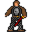

Unkorh¶{ .sprite }
| Type | NPC (can be spoken to; cannot be attacked) |
| Found in | Guynmart Castle |
| Entries in game data | 5 |
| Introduced | v0.7.2 |
5 entries in the game data
The game's data files define 5 separate characters named Unkorh. Andor's Trail stores a character as a new entry whenever it needs different behaviour, for example a different conversation at a later stage of a quest, a different location, or different combat statistics. Some entries represent the same person at different points in the story; others are different people who share a generic name. Here the entries differ in: conversation, location. This page combines them; each entry is described in its own section below.
| Entry | Type | Location | Role |
|---|---|---|---|
guynmart_steward |
NPC | Guynmart Castle: guynmart_main_1 | – |
guynmart_steward2 |
NPC | Guynmart Castle: guynmart_main_2 | – |
guynmart_steward3 |
NPC | Guynmart Castle: guynmart | – |
guynmart_steward4 |
NPC | Guynmart Castle: guynmart_main_0 | – |
guynmart_steward5 |
NPC | Guynmart Castle: guynmart_main_1 | – |
Guynmart Castle, Guynmart main 1 (guynmart_steward)¶
Entry ID: guynmart_steward · Type: NPC
Location: Guynmart Castle: guynmart_main_1
Quests¶
- Roses: stage 40
Dialogue simulator¶
Set the quest stages, items and other conditions that apply to your game, then start the conversation with Unkorh. The simulator applies the game's own rules: it performs the same silent checks, offers only the options that would be shown in the game, and applies their effects (quest stages, items handed over, rewards) as the conversation proceeds.
Rules verified against v0.8.18 game code (ConversationController.java) and dialogue data.
Dialogue (12 lines)
What the dialogue says, exactly as in the game files. Lines are listed once; links jump to the line a choice leads to.
guynmart_steward_10 (silent check: the first matching branch below is taken)
- branch 1 → guynmart_steward_20
guynmart_steward_20 Unkorh: “Hello - I am Unkorh, Steward of Guynmart Castle. I have never seen you here before. Are you looking for something?”
- “I would like to buy something to eat.” → guynmart_steward_30
- “I have a message for Lord Guynmart.” → guynmart_steward_40
- “I would like to see Lady Hannah.” → guynmart_steward_50
- “Eh ... I...” → guynmart_steward_22
guynmart_steward_30 Unkorh: “The cook shall give you some bread. And he can provide you with further provisions, if you can pay for them.” — effects: sets stage 40 of Roses
- Next → guynmart_steward_32
guynmart_steward_40 Unkorh: “You have a message for our Lord?”
- “Yes.” → guynmart_steward_42
guynmart_steward_50 Unkorh: “Lady Hannah is not in the mood to receive people. Something else?”
- “Eh ... I...” → guynmart_steward_22
- “I would like to buy something to eat.” → guynmart_steward_30
- “I have a message for Lord Guynmart.” → guynmart_steward_40
- “No, thank you, I will leave now.” → conversation ends
guynmart_steward_22 Unkorh: “Stop stuttering, kid. What do you want?”
- “I would like to buy something to eat.” → guynmart_steward_30
- “I have a message for Lord Guynmart.” → guynmart_steward_40
- “I would like to see Lady Hannah.” → guynmart_steward_50
guynmart_steward_32 Unkorh: “Take the left stairway and ask for Hofala, our cook.”
- “Thank you. I will go upstairs.” → conversation ends
guynmart_steward_42 Unkorh: “Lord Guynmart is uproad tending to urgent affairs. I expect him back tomorrow.”
- Next → guynmart_steward_44
guynmart_steward_44 Unkorh: “Deliver your message to me. I will pass it to Lord Guynmart when he returns.”
- “Eh, Guynmart shall ... he...” → guynmart_steward_45
- “I have orders to give it directly to Lord Guynmart.” → guynmart_steward_46
guynmart_steward_45 Unkorh: “I don't believe a single word you say. Don't waste my time. I have important things to do.”
guynmart_steward_46 Unkorh: “You have? Then you must wait. Leave now and come back tomorrow.”
- “Wait!” → guynmart_steward_48
guynmart_steward_48 Unkorh: “Yes?”
- “I would like to buy something to eat.” → guynmart_steward_30
- “I would like to see Lady Hannah.” → guynmart_steward_50
Version history¶
| Version | Change |
|---|---|
| v0.7.2 | Added Dialogue: 12 lines added |
Verified against v0.8.18 and every earlier release back to v0.7.0 (game data compared release by release).
Technical information (guynmart_steward)
| Entry ID | guynmart_steward |
| Spawn group | guynmart_steward |
| Loot table | – |
| Conversation | guynmart_steward_10 |
| Faction | – |
| Movement | – |
| Icon | monsters_ld1:11 |
| Defined in | res/raw/monsterlist_guynmart.json |
Raw data:
{
"id": "guynmart_steward",
"name": "Unkorh",
"iconID": "monsters_ld1:11",
"unique": 1,
"monsterClass": "humanoid",
"phraseID": "guynmart_steward_10"
}
Guynmart Castle, Guynmart main 2 (guynmart_steward2)¶
Entry ID: guynmart_steward2 · Type: NPC
Location: Guynmart Castle: guynmart_main_2
Quests¶
- Roses: stage 40
Dialogue simulator¶
Set the quest stages, items and other conditions that apply to your game, then start the conversation with Unkorh. The simulator applies the game's own rules: it performs the same silent checks, offers only the options that would be shown in the game, and applies their effects (quest stages, items handed over, rewards) as the conversation proceeds.
Rules verified against v0.8.18 game code (ConversationController.java) and dialogue data.
The full dialogue for this entry is included in the listing for an earlier entry on this page, starting at guynmart_steward_10.
Version history¶
| Version | Change |
|---|---|
| v0.7.2 | Added Dialogue: 12 lines added |
Verified against v0.8.18 and every earlier release back to v0.7.0 (game data compared release by release).
Technical information (guynmart_steward2)
| Entry ID | guynmart_steward2 |
| Spawn group | guynmart_steward2 |
| Loot table | – |
| Conversation | guynmart_steward_10 |
| Faction | – |
| Movement | – |
| Icon | monsters_ld1:11 |
| Defined in | res/raw/monsterlist_guynmart.json |
Raw data:
{
"id": "guynmart_steward2",
"name": "Unkorh",
"iconID": "monsters_ld1:11",
"unique": 1,
"monsterClass": "humanoid",
"phraseID": "guynmart_steward_10"
}
Guynmart Castle, Guynmart (guynmart_steward3)¶
Entry ID: guynmart_steward3 · Type: NPC
Location: Guynmart Castle: guynmart
Quests¶
- Roses: stage 80
Dialogue simulator¶
Set the quest stages, items and other conditions that apply to your game, then start the conversation with Unkorh. The simulator applies the game's own rules: it performs the same silent checks, offers only the options that would be shown in the game, and applies their effects (quest stages, items handed over, rewards) as the conversation proceeds.
Rules verified against v0.8.18 game code (ConversationController.java) and dialogue data.
Dialogue (6 lines)
What the dialogue says, exactly as in the game files. Lines are listed once; links jump to the line a choice leads to.
guynmart_steward3_10 (silent check: the first matching branch below is taken)
- branch 1 → guynmart_steward3_20
guynmart_steward3_20 Unkorh: “You Dare To Speak To Me!”
- “Hey, what did I do?” → guynmart_steward3_22
guynmart_steward3_22 Unkorh: “I Saw You On The Tower! What Were You Doing There?”
- “I just talked to Lady Hannah.” → guynmart_steward3_24
guynmart_steward3_24 Unkorh: “Don't You Dare Defile Her Lovely Name By Using It!”
- “But...” → guynmart_steward3_50
guynmart_steward3_50 Unkorh: “Olav! Come Here!” — effects: spawns monsters on guynmart
- Next → guynmart_steward3_52
guynmart_steward3_52 Unkorh: “Show our - guest - the special exit.” — effects: sets stage 80 of Roses, removes monsters from guynmart
- “Special exit?” → NPC leaves
Version history¶
| Version | Change |
|---|---|
| v0.7.2 | Added Dialogue: 6 lines added |
| v0.7.5 | Dialogue: 2 lines changed |
Verified against v0.8.18 and every earlier release back to v0.7.0 (game data compared release by release).
Technical information (guynmart_steward3)
| Entry ID | guynmart_steward3 |
| Spawn group | guynmart_steward3 |
| Loot table | – |
| Conversation | guynmart_steward3_10 |
| Faction | – |
| Movement | – |
| Icon | monsters_ld1:11 |
| Defined in | res/raw/monsterlist_guynmart.json |
Raw data:
{
"id": "guynmart_steward3",
"name": "Unkorh",
"iconID": "monsters_ld1:11",
"unique": 1,
"monsterClass": "humanoid",
"phraseID": "guynmart_steward3_10"
}
Guynmart Castle, Guynmart main 0 (guynmart_steward4)¶
Entry ID: guynmart_steward4 · Type: NPC
Location: Guynmart Castle: guynmart_main_0
Quests¶
- Roses: stages 161, 162
- Search for Andor: stages 90, 92
Dialogue simulator¶
Set the quest stages, items and other conditions that apply to your game, then start the conversation with Unkorh. The simulator applies the game's own rules: it performs the same silent checks, offers only the options that would be shown in the game, and applies their effects (quest stages, items handed over, rewards) as the conversation proceeds.
Rules verified against v0.8.18 game code (ConversationController.java) and dialogue data.
Dialogue (30 lines)
What the dialogue says, exactly as in the game files. Lines are listed once; links jump to the line a choice leads to.
guynmart_steward4_10 (silent check: the first matching branch below is taken)
- branch 1 (if reached stage 161 of Roses) → guynmart_steward4_210
- branch 2 → guynmart_steward4_12
guynmart_steward4_210 Unkorh: “Watch out! Guynmart...” — effects: sets stage 161 of Roses, removes monsters from guynmart_main_0
- “What?” → guynmart_steward4_220
guynmart_steward4_12 Unkorh: “You again!”
- “Yes, me. And I know what you have done! I talked to Norgothla in the woods and found Lord Guynmart and Lovis here in…” → guynmart_steward4_120
guynmart_steward4_220 Unkorh: “Guynmart tried to get at you from behind. I felt I had to do something quick, but it seems that it wasn't necessary. Obviously he stumbled and fell on his own knife.”
- “Thank you. Really, I didn't expect this from Lord Guynmart.” → guynmart_steward4_230
guynmart_steward4_120 Unkorh: “Indeed. I am surprised to see you here.”
- Next → guynmart_steward4_122
guynmart_steward4_230 Unkorh: “Yes, Guynmart had changed a lot recently. Here, please take Andor's bonemeal potion box and return it to him.” — effects: sets stage 92 of Search for Andor, gives Andor's bonemeal box, Bonemeal potion
- “If only I had finally found my brother.” → guynmart_steward4_290
guynmart_steward4_122 Unkorh: “I wanted to keep you out of all this. I'm sure you now have many questions. I will tell you everything.”
- “I hope you have a good explanation.” → guynmart_steward4_130
- “I don't want to hear your lies.” → guynmart_steward4_124
guynmart_steward4_290 Unkorh: “And now stick to your plan. Open the gate. My men will await Norgothla.”
- Next → guynmart_steward4_292
guynmart_steward4_130 Unkorh: “Until recently, everything was fine. Guynmart was a righteous man, open-minded and tolerant. And Hannah was supposed to marry me when she was old enough.”
- Next → guynmart_steward4_140
guynmart_steward4_124 Unkorh: “Please be patient, and give me a minute. This may be important to you.”
- “No. I will never believe you unless you let Guynmart go!” → guynmart_steward4_20
- “OK. One minute.” → guynmart_steward4_130
guynmart_steward4_292 Unkorh: “Then go to the farm south of here and stay there for the night. May The Shadow be with you!”
- “Thank you.” → NPC leaves
guynmart_steward4_140 Unkorh: “Then one unfortunate day this Lovis appeared.”
- Next → guynmart_steward4_142
guynmart_steward4_20 Unkorh: “I have had enough of you. This will be your end!”
- “Oh dear. Have mercy, please. I am just a little kid.” → guynmart_steward4_30
- “Do you think so? Traitor!” → guynmart_steward4_50
guynmart_steward4_142 Unkorh: “He kept playing on his probably magical flute and thus stole Hannah's heart.”
- Next → guynmart_steward4_144
guynmart_steward4_30 Unkorh: “Now you will get what you deserve!”
- “No, please, please don't hurt me!” → guynmart_steward4_32
guynmart_steward4_50 Unkorh: “What did you call me? I'll beat you until you whine for mercy.”
- “Ha! So come on and try! No? I will put an end to you now!” → guynmart_steward4_60
- “Oh dear, please forgive my rash words.” → guynmart_steward4_30
guynmart_steward4_144 Unkorh: “He also began to influence Guynmart more and more, until Guynmart would not make a single decision without hearing from Lovis.”
- Next → guynmart_steward4_150
guynmart_steward4_32 Unkorh: “Pathetic. So run, and never let me set eyes on you again!”
guynmart_steward4_60 Unkorh: “OK. I will go now. But I will not forget you - fear my revenge! And before I leave, I will stab your beloved Guynmart...” — effects: sets stage 162 of Roses, removes monsters from guynmart_main_0
- “Nooo! What did you do? Stay and face me, you coward!” → guynmart_200
guynmart_steward4_150 Unkorh: “Shadow meetings were banned, and the use of bonemeal potions was prohibited.”
- Next → guynmart_steward4_152
guynmart_200 Guynmart: “[Groaning] ...open the gate...”
- Next → guynmart_210
guynmart_steward4_152 Unkorh: “People had to hand over all their bonemeal supplies so that they could be destroyed. The farms, their inhabitants, and even visitors were searched.”
- Next → guynmart_steward4_160
guynmart_210 Guynmart: “...then go ... to Rhodita...”
guynmart_steward4_160 Unkorh: “A young man, who was my guest at that time, gave me his bonemeal potion box and asked me to take care of it. Otherwise it would have been destroyed too.”
- Next → guynmart_steward4_162
guynmart_steward4_162 Unkorh: “So I took it for safekeeping. Look here.”
- “I know this box - it belongs to my brother Andor!” → guynmart_steward4_164
guynmart_steward4_164 Unkorh: “Andor - yes, that was his name. He is your brother? That explains the similarity.”
- Next → guynmart_steward4_166
guynmart_steward4_166 Unkorh: “We had long nights of interesting conversation.” — effects: sets stage 90 of Search for Andor
- Next → guynmart_steward4_170
guynmart_steward4_170 Unkorh: “Well, Andor had to go on urgent business and left the castle the same night.”
- Next → guynmart_steward4_200
guynmart_steward4_200 Unkorh: “Enough talk. Now you have to decide if you want to trust me or rather Guynmart.”
- “I think I misjudged you. I will trust you.” → guynmart_steward4_202
- “You did not convince me. I believe Guynmart more than you.” → guynmart_steward4_202
guynmart_steward4_202 Unkorh: “Are you sure? Listen to your heart. It is really important.”
- “Yes, I will trust you.” → guynmart_steward4_210
- “No, I believe Guynmart more than you.” → guynmart_steward4_20
Version history¶
| Version | Change |
|---|---|
| v0.7.2 | Added Dialogue: 30 lines added |
Verified against v0.8.18 and every earlier release back to v0.7.0 (game data compared release by release).
Technical information (guynmart_steward4)
| Entry ID | guynmart_steward4 |
| Spawn group | guynmart_steward4 |
| Loot table | – |
| Conversation | guynmart_steward4_10 |
| Faction | – |
| Movement | – |
| Icon | monsters_ld1:11 |
| Defined in | res/raw/monsterlist_guynmart.json |
Raw data:
{
"id": "guynmart_steward4",
"name": "Unkorh",
"iconID": "monsters_ld1:11",
"unique": 1,
"monsterClass": "humanoid",
"phraseID": "guynmart_steward4_10"
}
Guynmart Castle, Guynmart main 1 (guynmart_steward5)¶
Entry ID: guynmart_steward5 · Type: NPC
Location: Guynmart Castle: guynmart_main_1
Quests¶
- Roses: stages 200, 210, 211
- guynmart nondisplay (hidden flag): stages 33, 36
Dialogue simulator¶
Set the quest stages, items and other conditions that apply to your game, then start the conversation with Unkorh. The simulator applies the game's own rules: it performs the same silent checks, offers only the options that would be shown in the game, and applies their effects (quest stages, items handed over, rewards) as the conversation proceeds.
Rules verified against v0.8.18 game code (ConversationController.java) and dialogue data.
Dialogue (51 lines)
What the dialogue says, exactly as in the game files. Lines are listed once; links jump to the line a choice leads to.
guynmart_steward5_10 (silent check: the first matching branch below is taken)
- branch 1 (if reached stage 211 of Roses; reached stage 1 of Ringmaker (hidden flag)) → guynmart_lovis2_450
- branch 2 (if reached stage 211 of Roses; NOT reached stage 200 of Roses) → guynmart_steward5_12
- branch 3 (if reached stage 211 of Roses) → guynmart_steward5_14
- branch 4 (if NOT reached stage 200 of Roses) → guynmart_steward5_20
- branch 5 (if reached stage 32 of guynmart nondisplay (hidden flag)) → guynmart_lovis2_120
- branch 6 → guynmart_lovis2_40
guynmart_lovis2_450 Unkorh: “We have good news for you.”
- Next → guynmart_lovis2_452
guynmart_steward5_12 Unkorh: “Hello $playername.”
guynmart_steward5_14 Unkorh: “Hello $playername - The Shadow be with you.”
guynmart_steward5_20 Unkorh: “Welcome $playername. You were of great help.”
- Next → guynmart_lovis2_40
guynmart_lovis2_120 Unkorh: “So you found something you like. Good.” — effects: spawns monsters on guynmart_main_1, removes monsters from guynmart_main_1
- “Oh yes - I am overwhelmed by your generosity!” → guynmart_lovis2_130
guynmart_lovis2_40 (silent check: the first matching branch below is taken)
- branch 1 (if reached stage 1 of Ringmaker (hidden flag)) → guynmart_lovis2_50
- branch 2 → guynmart_lovis2_70
guynmart_lovis2_452 Unkorh: “Rorthron, the ringmaker, was behaving rather strangely, and so we questioned him. It came to light that he seems to have damaged one of your rings.”
- Next → guynmart_lovis2_454
guynmart_lovis2_130 (silent check: the first matching branch below is taken) — effects: sets stage 36 of guynmart nondisplay (hidden flag)
- branch 1 (if reached stage 181 of Roses) → guynmart_lovis2_141
- branch 2 → guynmart_lovis2_140
guynmart_lovis2_50 Unkorh: “We also have good news for you.”
- Next → guynmart_lovis2_52
guynmart_lovis2_70 (silent check: the first matching branch below is taken)
- branch 1 (if killed 1× Sheep; NOT reached stage 33 of guynmart nondisplay (hidden flag)) → guynmart_lovis2_200
- branch 2 → guynmart_lovis2_100
guynmart_lovis2_454 Unkorh: “He eventually admitted that he secretly exchanged your ring for a worthless ring.”
- Next → guynmart_lovis2_456
guynmart_lovis2_141 (silent check: the first matching branch below is taken) — effects: sets stage 211 of Roses
- branch 1 → guynmart_lovis2_151
guynmart_lovis2_140 (silent check: the first matching branch below is taken) — effects: sets stage 210 of Roses, spawns monsters on guynmart_wood_9
- branch 1 → guynmart_lovis2_150
guynmart_lovis2_52 Unkorh: “Rorthron, the ringmaker, was behaving rather strangely, and so we questioned him. It came to light that he seems to have damaged one of your rings.”
- Next → guynmart_lovis2_54
guynmart_lovis2_200 Unkorh: “Regrettably, we still have to sort out an unpleasant thing. Let our shepherd speak.” — effects: spawns monsters on guynmart_main_1
- Next → guynmart_lovis2_210
guynmart_lovis2_100 Unkorh: “You have earned your reward. Go now into our treasury.” — effects: sets stage 200 of Roses, spawns monsters on guynmart_main_1, removes monsters from guynmart_main_1
guynmart_lovis2_456 Unkorh: “He promised never to do such things again and handed the real ring over to us. We want to leave it at that.”
- Next → guynmart_lovis2_460
guynmart_lovis2_151 Unkorh: “At last we have to part. Farewell until we meet again! When you will find your brother, tell him that he is always welcome.”
- “Goodbye.” → conversation ends
guynmart_lovis2_150 Unkorh: “We prepared a surprise for you. Go and look east of the castle near the sheep pasture. Farewell until we meet again!”
- “Goodbye.” → conversation ends
guynmart_lovis2_54 Unkorh: “He eventually admitted that he secretly exchanged your ring for a worthless ring.”
- Next → guynmart_lovis2_56
guynmart_lovis2_210 Shepherd: “Grumble ... grumble...”
- Next → guynmart_lovis2_220
guynmart_lovis2_460 Unkorh: “So here, take your precious ring back.” — effects: gives 1× Ring of lesser Shadow, clears stage 1 of Ringmaker (hidden flag)
- “Oh! I can't believe it! Is it really true?” → conversation ends
guynmart_lovis2_56 Unkorh: “He promised never to do such things again and handed the real ring over to us. We want to leave it at that.”
- Next → guynmart_lovis2_60
guynmart_lovis2_220 (silent check: the first matching branch below is taken)
- branch 1 (if reached stage 181 of Roses) → guynmart_lovis2_220b
- branch 2 → guynmart_lovis2_220a
guynmart_lovis2_60 Unkorh: “So here, take your precious ring back.” — effects: gives 1× Ring of lesser Shadow, clears stage 1 of Ringmaker (hidden flag)
- “Oh! I can't believe it! Is it really true?” → guynmart_lovis2_70
guynmart_lovis2_220b (silent check: the first matching branch below is taken)
- branch 1 → guynmart_lovis2_220c
guynmart_lovis2_220a (silent check: the first matching branch below is taken)
- branch 1 → guynmart_lovis2_220c
guynmart_lovis2_220c Unkorh: “It seems sheep were killed by your hand. Our sheep, to be precise.”
- Next → guynmart_lovis2_221
guynmart_lovis2_221 Unkorh: “You will be fined 100 gold for each sheep you killed. Do you accept this judgment?”
- “Yes, what I did was stupid.” → guynmart_lovis2_300
- “Lies! All lies!” → guynmart_lovis2_222
- “I can explain - it was an accident...” → guynmart_lovis2_222
guynmart_lovis2_300 (silent check: the first matching branch below is taken)
- branch 1 (if killed 25× Sheep) → guynmart_lovis2_325
- branch 2 (if killed 20× Sheep) → guynmart_lovis2_320
- branch 3 (if killed 15× Sheep) → guynmart_lovis2_315
- branch 4 (if killed 10× Sheep) → guynmart_lovis2_310
- branch 5 (if killed 9× Sheep) → guynmart_lovis2_309
- branch 6 (if killed 8× Sheep) → guynmart_lovis2_308
- branch 7 (if killed 7× Sheep) → guynmart_lovis2_307
- branch 8 (if killed 6× Sheep) → guynmart_lovis2_306
- branch 9 (if killed 5× Sheep) → guynmart_lovis2_305
- branch 10 (if killed 4× Sheep) → guynmart_lovis2_304
- branch 11 (if killed 3× Sheep) → guynmart_lovis2_303
- branch 12 (if killed 2× Sheep) → guynmart_lovis2_302
- branch 13 (if killed 1× Sheep) → guynmart_lovis2_301
guynmart_lovis2_222 (silent check: the first matching branch below is taken)
- branch 1 (if reached stage 181 of Roses) → guynmart_lovis2_231
- branch 2 → guynmart_lovis2_230
guynmart_lovis2_325 Unkorh: “2,500 gold for 25 or perhaps even more killed sheep.”
- “Here is the gold.” (if pay 2,500 gold) → guynmart_lovis2_360
- “I don't have enough gold.” → guynmart_lovis2_350
guynmart_lovis2_320 Unkorh: “2,000 gold for 20 or perhaps even more killed sheep.”
- “Here is the gold.” (if pay 2,000 gold) → guynmart_lovis2_360
- “I don't have enough gold.” → guynmart_lovis2_350
guynmart_lovis2_315 Unkorh: “1,500 gold for 15 or perhaps even more killed sheep.”
- “Here is the gold.” (if pay 1,500 gold) → guynmart_lovis2_360
- “I don't have enough gold.” → guynmart_lovis2_350
guynmart_lovis2_310 Unkorh: “1,000 gold for 10 or perhaps even more killed sheep.”
- “Here is the gold.” (if pay 1,000 gold) → guynmart_lovis2_360
- “I don't have enough gold.” → guynmart_lovis2_350
guynmart_lovis2_309 Unkorh: “900 gold for 9 killed sheep.”
- “Here is the gold.” (if pay 900 gold) → guynmart_lovis2_360
- “I don't have enough gold.” → guynmart_lovis2_350
guynmart_lovis2_308 Unkorh: “800 gold for 8 killed sheep.”
- “Here is the gold.” (if pay 800 gold) → guynmart_lovis2_360
- “I don't have enough gold.” → guynmart_lovis2_350
guynmart_lovis2_307 Unkorh: “700 gold for 7 killed sheep.”
- “Here is the gold.” (if pay 700 gold) → guynmart_lovis2_360
- “I don't have enough gold.” → guynmart_lovis2_350
guynmart_lovis2_306 Unkorh: “600 gold for 6 killed sheep.”
- “Here is the gold.” (if pay 600 gold) → guynmart_lovis2_360
- “I don't have enough gold.” → guynmart_lovis2_350
guynmart_lovis2_305 Unkorh: “500 gold for 5 killed sheep.”
- “Here is the gold.” (if pay 500 gold) → guynmart_lovis2_360
- “I don't have enough gold.” → guynmart_lovis2_350
guynmart_lovis2_304 Unkorh: “400 gold for 4 killed sheep.”
- “Here is the gold.” (if pay 400 gold) → guynmart_lovis2_360
- “I don't have enough gold.” → guynmart_lovis2_350
guynmart_lovis2_303 Unkorh: “300 gold for 3 killed sheep.”
- “Here is the gold.” (if pay 300 gold) → guynmart_lovis2_360
- “I don't have enough gold.” → guynmart_lovis2_350
guynmart_lovis2_302 Unkorh: “200 gold for 2 killed sheep.”
- “Here is the gold.” (if pay 200 gold) → guynmart_lovis2_360
- “I don't have enough gold.” → guynmart_lovis2_350
guynmart_lovis2_301 Unkorh: “100 gold for the killed sheep.”
- “Here is the gold.” (if pay 100 gold) → guynmart_lovis2_360
- “I don't have enough gold.” → guynmart_lovis2_350
guynmart_lovis2_231 Unkorh: “As you wish. I am very disappointed with you - go now.”
- “No, sorry, I didn't mean it.” → guynmart_lovis2_220
- “I will go. Bye.” → guynmart_lovis2_241
guynmart_lovis2_230 Unkorh: “As you wish. I already regret that we prepared a surprise for you next to the sheep pastures. I am very disappointed in you. Go now.”
- “No, sorry, I didn't mean it.” → guynmart_lovis2_220
- “I will go. Bye.” → guynmart_lovis2_240
guynmart_lovis2_360 Unkorh: “[Gold taken] All the sheep you killed are paid for, so now we will forget the whole thing.” — effects: sets stage 33 of guynmart nondisplay (hidden flag), removes monsters from guynmart_main_1
- “I am relieved.” → guynmart_lovis2_100
guynmart_lovis2_350 Unkorh: “You will find a way to get the missing gold. Then come back and pay the rest.”
- “OK.” → conversation ends
guynmart_lovis2_241 (silent check: the first matching branch below is taken) — effects: sets stage 211 of Roses, sets stage 36 of guynmart nondisplay (hidden flag), removes monsters from guynmart_main_1
guynmart_lovis2_240 (silent check: the first matching branch below is taken) — effects: sets stage 210 of Roses, sets stage 36 of guynmart nondisplay (hidden flag), removes monsters from guynmart_main_1, spawns monsters on guynmart_wood_9
Version history¶
| Version | Change |
|---|---|
| v0.7.2 | Added Dialogue: 51 lines added |
| v0.8.18 | Dialogue: 4 lines changed · text: “2000 gold for 20 or perhaps even more killed sheep.” → “{2000} gold for 20 or perhaps even more killed sheep.” · text: “1000 gold for 10 or perhaps even more killed sheep.” → “{1000} gold for 10 or perhaps even more killed sheep.” |
Verified against v0.8.18 and every earlier release back to v0.7.0 (game data compared release by release).
Technical information (guynmart_steward5)
| Entry ID | guynmart_steward5 |
| Spawn group | guynmart_steward5 |
| Loot table | – |
| Conversation | guynmart_steward5_10 |
| Faction | – |
| Movement | – |
| Icon | monsters_ld1:11 |
| Defined in | res/raw/monsterlist_guynmart.json |
Raw data:
{
"id": "guynmart_steward5",
"name": "Unkorh",
"iconID": "monsters_ld1:11",
"unique": 1,
"monsterClass": "humanoid",
"phraseID": "guynmart_steward5_10"
}
Community notes¶
Written by players, not generated from game data. Observations: what players notice in-game · Lore: the in-world story · Trivia: real-world facts, references, development history · Theory / speculation: unconfirmed ideas; may just be unfinished content
Observations¶
No notes yet. Contributions are welcome: add a note.
Lore¶
No notes yet. Contributions are welcome: add a note.
Trivia¶
No notes yet. Contributions are welcome: add a note.
Theory / speculation¶
No notes yet. Contributions are welcome: add a note.
Data from v0.8.18